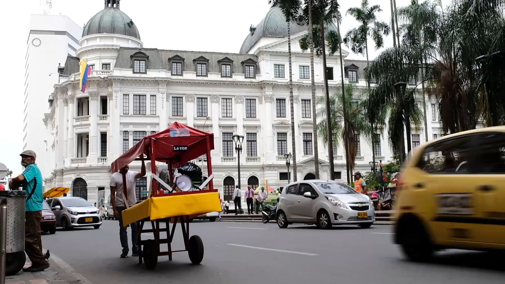

2022
Resuena la voz
Concierto para escultura sonora.
Museo La Tertulia
Cali, Colombia
Prácticas sonoras · Selección
Piezas, acciones e instalaciones que trabajan con el sonido como materia y como relación.

Ver registro en VimeoAcción sonora · Cali
Un pregón anuncia un producto que nunca se nombra. Una carreta con recipientes vacíos y un tocadiscos recorre el centro de Cali, desplazando sonidos y gestos del comercio cotidiano hacia una acción sonora.
Ver La vozEscultura, instalación y medios
2022
Concierto para escultura sonora.
Museo La Tertulia
Cali, Colombia
2021
Escultura sonora. Proyecto de investigación-creación.
Universidad ICESI
Cali, Colombia
2019
Documental transmedia.
Centro de Cultura Digital
Ciudad de México
2018
Instalación sonora multicanal para sitio específico.
Premio Estatal de Artes Escénicas
Secretaría de Cultura
Estado de México